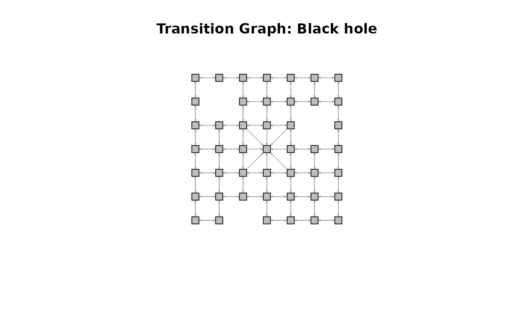
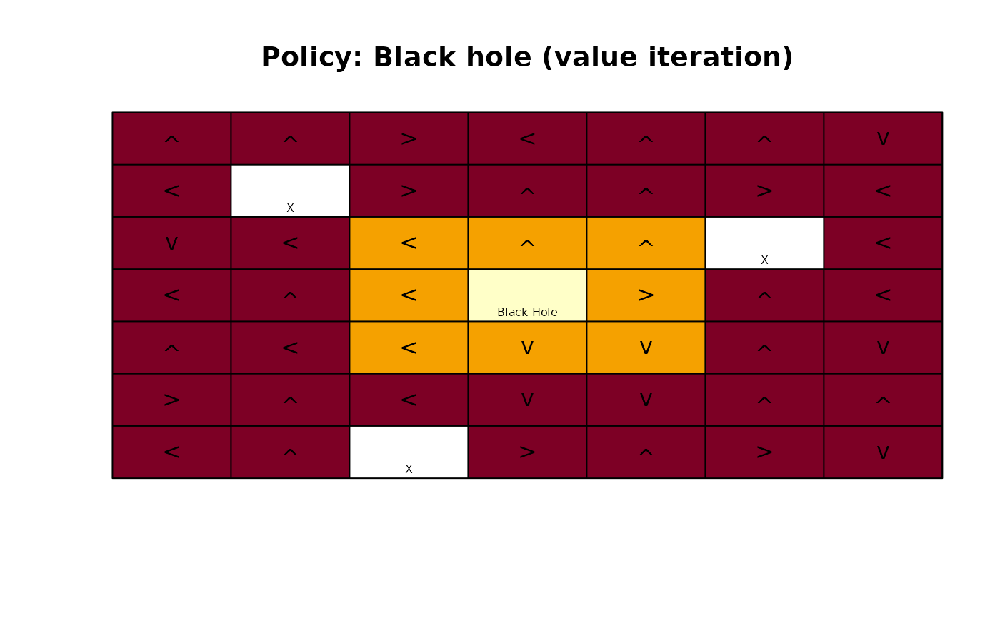
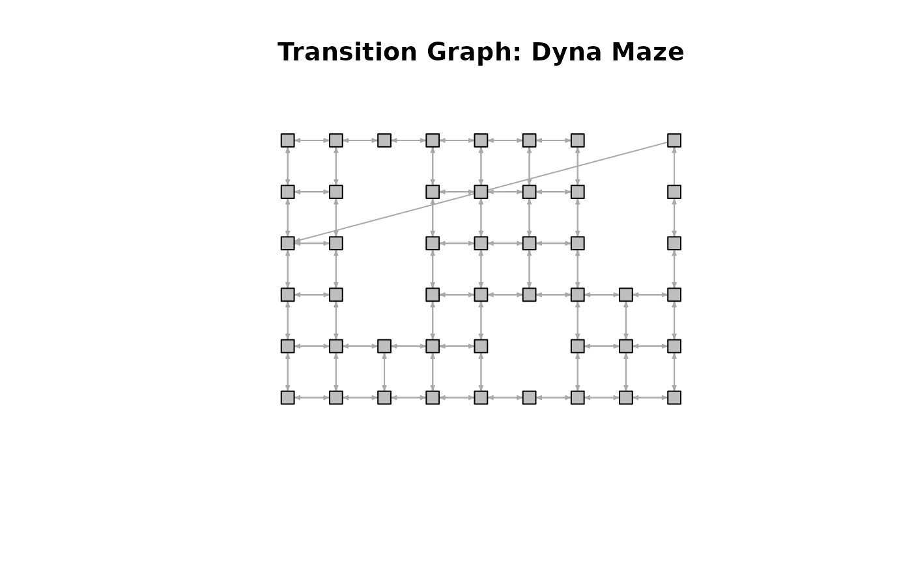
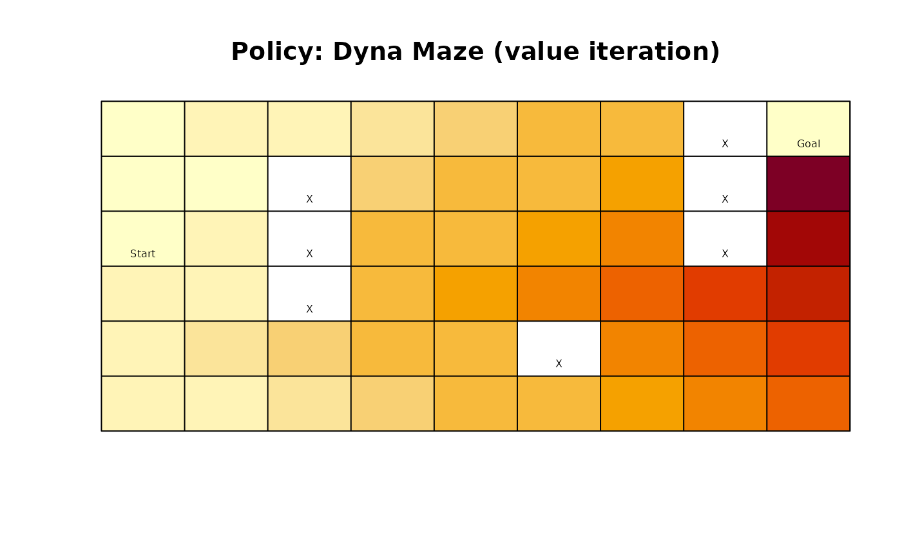
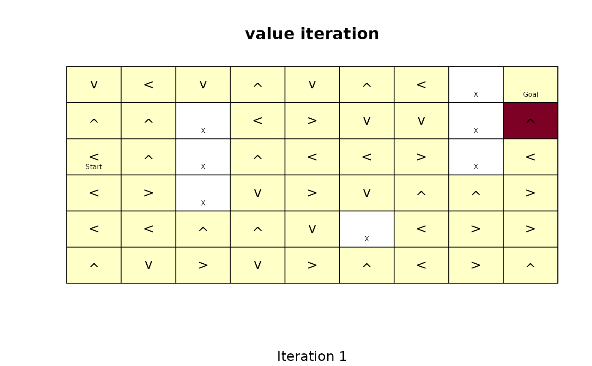
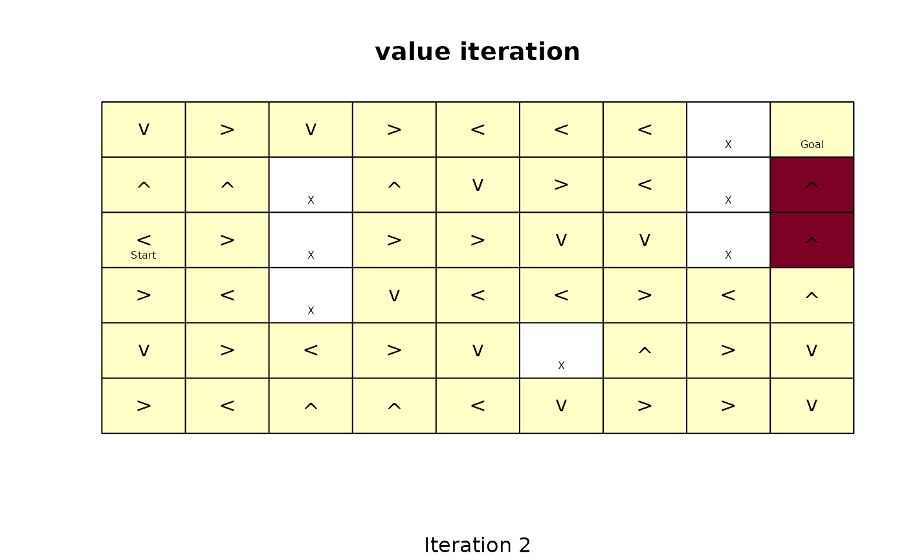
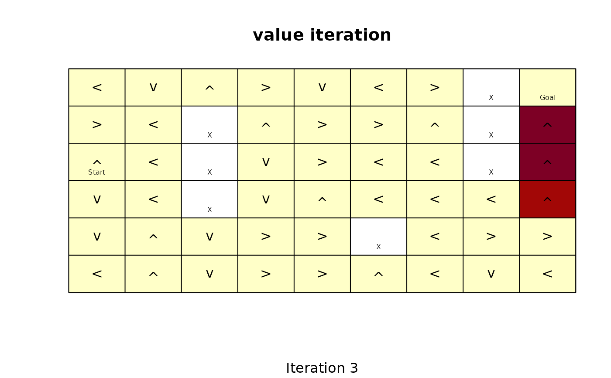

Helper functions for gridworld MDPs to convert between state names and gridworld positions, and for visualizing policies.
Usage
gridworld_init(
dim,
action_labels = c("up", "right", "down", "left"),
unreachable_states = NULL,
absorbing_states = NULL,
labels = NULL
)
gridworld_maze_MDP(
dim,
start,
goal,
walls = NULL,
action_labels = c("up", "right", "down", "left"),
goal_reward = 1,
step_cost = 0,
restart = FALSE,
discount = 0.9,
horizon = Inf,
info = NULL,
name = NA
)
gridworld_s2rc(s)
gridworld_rc2s(rc)
gridworld_matrix(model, epoch = 1L, what = "states")
gridworld_plot_policy(
model,
epoch = 1L,
actions = "character",
states = FALSE,
labels = TRUE,
absorbing_state_action = FALSE,
main = NULL,
cex = 1,
offset = 0.5,
lines = TRUE,
...
)
gridworld_plot_transition_graph(
x,
hide_unreachable_states = TRUE,
remove.loops = TRUE,
vertex.color = "gray",
vertex.shape = "square",
vertex.size = 10,
vertex.label = NA,
edge.arrow.size = 0.3,
margin = 0.2,
main = NULL,
...
)
gridworld_animate(x, method, n, zlim = NULL, ...)Arguments
- dim
vector of length two with the x and y extent of the gridworld.
- action_labels
vector with four action labels that move the agent up, right, down, and left.
- unreachable_states
a vector with state labels for unreachable states. These states will be excluded.
- absorbing_states
a vector with state labels for absorbing states.
- labels
logical; show state labels.
- start, goal
labels for the start state and the goal state.
- walls
a vector with state labels for walls. Walls will become unreachable states.
- goal_reward
reward to transition to the goal state.
- step_cost
cost of each action that does not lead to the goal state.
- restart
logical; if
TRUEthen the problem automatically restarts when the agent reaches the goal state.- discount, horizon
MDP discount factor, and horizon.
- info
A list with additional information. Has to contain the gridworld dimensions as element
gridworld_dim.- name
a string to identify the MDP problem.
- s
a state label.
- rc
a vector of length two with the row and column coordinate of a state in the gridworld matrix.
- model, x
a solved gridworld MDP.
- epoch
epoch for unconverged finite-horizon solutions.
- what
What should be returned in the matrix. Options are:
"states","labels","values","actions","absorbing", and"reachable".- actions
how to show actions. Options are: simple
"character","unicode"arrows (needs to be supported by the used font),"label"of the action, and"none"to suppress showing the action.- states
logical; show state names.
- absorbing_state_action
logical; show the value and the action for absorbing states.
- main
a main title for the plot. Defaults to the name of the problem.
- cex
expansion factor for the action.
- offset
move the state labels out of the way (in fractions of a character width).
- lines
logical; draw lines to separate states.
- ...
further arguments are passed on to
igraph::plot.igraph().- hide_unreachable_states
logical; do not show unreachable states.
- remove.loops
logical; do not show transitions from a state back to itself.
- vertex.color, vertex.shape, vertex.size, vertex.label, edge.arrow.size
see
igraph::igraph.plottingfor details. Setvertex.label = NULLto show the state labels on the graph.- margin
a single number specifying the margin of the plot. Can be used if the graph does not fit inside the plotting area.
- method
an MDP solution method for
solve_MDP().- n
number of iterations to animate.
- zlim
limits for visualizing the state value.
Details
Gridworlds are implemented with state names s(row,col), where
row and col are locations in the matrix representing the gridworld.
The actions are "up", "right", "down", and "left".
gridworld_init() initializes a new gridworld creating a matrix
of states with the given dimensions. Other action names
can be specified, but they must have the same effects in the same order
as above. Unreachable states (walls) and absorbing states can be defined.
This information can be used to build a custom gridworld MDP.
Several helper functions are provided to use states, look at the state layout, and plot policies on the gridworld.
gridworld_maze_MDP() helps to easily define maze-like gridworld MDPs.
By default, the goal state is absorbing, but with restart = TRUE, the
agent restarts the problem at the start state every time it reaches the goal
and receives the reward. Note that this implies that the goal state itself
becomes unreachable.
gridworld_animate() applies algorithms from solve_MDP() iteration
by iteration and visualized the state utilities. This helps to understand
how the algorithms work.
See also
Other gridworld:
Cliff_walking,
DynaMaze,
Maze,
Windy_gridworld
Other MDP:
MDP(),
MDP2POMDP,
MDP_policy_functions,
accessors,
actions(),
add_policy(),
reachable_and_absorbing,
regret(),
simulate_MDP(),
solve_MDP(),
transition_graph(),
value_function()
Examples
# Defines states, actions and a transition model for a standard gridworld
gw <- gridworld_init(dim = c(7,7),
unreachable_states = c("s(2,2)", "s(7,3)", "s(3,6)"),
absorbing_states = "s(4,4)",
labels = list("s(4,4)" = "Black Hole")
)
gw$states
#> [1] "s(1,1)" "s(2,1)" "s(3,1)" "s(4,1)" "s(5,1)" "s(6,1)" "s(7,1)" "s(1,2)"
#> [9] "s(3,2)" "s(4,2)" "s(5,2)" "s(6,2)" "s(7,2)" "s(1,3)" "s(2,3)" "s(3,3)"
#> [17] "s(4,3)" "s(5,3)" "s(6,3)" "s(1,4)" "s(2,4)" "s(3,4)" "s(4,4)" "s(5,4)"
#> [25] "s(6,4)" "s(7,4)" "s(1,5)" "s(2,5)" "s(3,5)" "s(4,5)" "s(5,5)" "s(6,5)"
#> [33] "s(7,5)" "s(1,6)" "s(2,6)" "s(4,6)" "s(5,6)" "s(6,6)" "s(7,6)" "s(1,7)"
#> [41] "s(2,7)" "s(3,7)" "s(4,7)" "s(5,7)" "s(6,7)" "s(7,7)"
gw$actions
#> [1] "up" "right" "down" "left"
gw$info
#> $gridworld_dim
#> [1] 7 7
#>
#> $gridworld_labels
#> $gridworld_labels$`s(4,4)`
#> [1] "Black Hole"
#>
#>
# display the state labels in the gridworld
gridworld_matrix(gw)
#> [,1] [,2] [,3] [,4] [,5] [,6] [,7]
#> [1,] "s(1,1)" "s(1,2)" "s(1,3)" "s(1,4)" "s(1,5)" "s(1,6)" "s(1,7)"
#> [2,] "s(2,1)" NA "s(2,3)" "s(2,4)" "s(2,5)" "s(2,6)" "s(2,7)"
#> [3,] "s(3,1)" "s(3,2)" "s(3,3)" "s(3,4)" "s(3,5)" NA "s(3,7)"
#> [4,] "s(4,1)" "s(4,2)" "s(4,3)" "s(4,4)" "s(4,5)" "s(4,6)" "s(4,7)"
#> [5,] "s(5,1)" "s(5,2)" "s(5,3)" "s(5,4)" "s(5,5)" "s(5,6)" "s(5,7)"
#> [6,] "s(6,1)" "s(6,2)" "s(6,3)" "s(6,4)" "s(6,5)" "s(6,6)" "s(6,7)"
#> [7,] "s(7,1)" "s(7,2)" NA "s(7,4)" "s(7,5)" "s(7,6)" "s(7,7)"
gridworld_matrix(gw, what = "label")
#> [,1] [,2] [,3] [,4] [,5] [,6] [,7]
#> [1,] "" "" "" "" "" "" ""
#> [2,] "" "X" "" "" "" "" ""
#> [3,] "" "" "" "" "" "X" ""
#> [4,] "" "" "" "Black Hole" "" "" ""
#> [5,] "" "" "" "" "" "" ""
#> [6,] "" "" "" "" "" "" ""
#> [7,] "" "" "X" "" "" "" ""
gridworld_matrix(gw, what = "reachable")
#> [,1] [,2] [,3] [,4] [,5] [,6] [,7]
#> [1,] TRUE TRUE TRUE TRUE TRUE TRUE TRUE
#> [2,] TRUE FALSE TRUE TRUE TRUE TRUE TRUE
#> [3,] TRUE TRUE TRUE TRUE TRUE FALSE TRUE
#> [4,] TRUE TRUE TRUE TRUE TRUE TRUE TRUE
#> [5,] TRUE TRUE TRUE TRUE TRUE TRUE TRUE
#> [6,] TRUE TRUE TRUE TRUE TRUE TRUE TRUE
#> [7,] TRUE TRUE FALSE TRUE TRUE TRUE TRUE
gridworld_matrix(gw, what = "absorbing")
#> [,1] [,2] [,3] [,4] [,5] [,6] [,7]
#> [1,] FALSE FALSE FALSE FALSE FALSE FALSE FALSE
#> [2,] FALSE TRUE FALSE FALSE FALSE FALSE FALSE
#> [3,] FALSE FALSE FALSE FALSE FALSE TRUE FALSE
#> [4,] FALSE FALSE FALSE TRUE FALSE FALSE FALSE
#> [5,] FALSE FALSE FALSE FALSE FALSE FALSE FALSE
#> [6,] FALSE FALSE FALSE FALSE FALSE FALSE FALSE
#> [7,] FALSE FALSE TRUE FALSE FALSE FALSE FALSE
# a transition function for regular moves in the gridworld is provided
gw$transition_prob("right", "s(1,1)", "s(1,2)")
#> [1] 1
gw$transition_prob("right", "s(2,1)", "s(2,2)") ### we cannot move into an unreachable state
#> [1] 0
gw$transition_prob("right", "s(2,1)", "s(2,1)") ### but the agent stays in place
#> [1] 1
# convert between state names and row/column indices
gridworld_s2rc("s(1,1)")
#> [1] 1 1
gridworld_rc2s(c(1,1))
#> [1] "s(1,1)"
# The information in gw can be used to build a custom MDP.
# We modify the standard transition function so there is a 50% chance that
# you will get sucked into the black hole from the adjacent squares.
trans_black_hole <- function(action = NA, start.state = NA, end.state = NA) {
# ignore the action next to the black hole
if (start.state %in% c("s(3,3)", "s(3,4)", "s(3,5)", "s(4,3)", "s(4,5)",
"s(5,3)", "s(5,4)", "s(5,5)")) {
if(end.state == "s(4,4)")
return(.5)
else
return(gw$transition_prob(action, start.state, end.state) * .5)
}
# use the standard gridworld movement
gw$transition_prob(action, start.state, end.state)
}
black_hole <- MDP(states = gw$states,
actions = gw$actions,
transition_prob = trans_black_hole,
reward = rbind(R_(value = +1), R_(end.state = "s(4,4)", value = -100)),
info = gw$info,
name = "Black hole"
)
black_hole
#> MDP, list - Black hole
#> Discount factor: 0.9
#> Horizon: Inf epochs
#> Size: 46 states / 4 actions
#> Start: uniform
#>
#> List components: ‘name’, ‘discount’, ‘horizon’, ‘states’, ‘actions’,
#> ‘transition_prob’, ‘reward’, ‘info’, ‘start’
gridworld_plot_transition_graph(black_hole)

# solve the problem
sol <- solve_MDP(black_hole)
gridworld_matrix(sol, what = "values")
#> [,1] [,2] [,3] [,4] [,5] [,6] [,7]
#> [1,] 9.999907 9.999907 9.999907 9.999907 9.999907 9.999907 9.999907
#> [2,] 9.999907 NA 9.999907 9.999907 9.999907 9.999907 9.999907
#> [3,] 9.999907 9.999907 -494.995416 -494.995416 -494.995416 NA 9.999907
#> [4,] 9.999907 9.999907 -494.995416 -999.990739 -494.995416 9.999907 9.999907
#> [5,] 9.999907 9.999907 -494.995416 -494.995416 -494.995416 9.999907 9.999907
#> [6,] 9.999907 9.999907 9.999907 9.999907 9.999907 9.999907 9.999907
#> [7,] 9.999907 9.999907 NA 9.999907 9.999907 9.999907 9.999907
gridworld_plot_policy(sol)

# the optimal policy is to fly around, but avoid the black hole.
# Build a Maze: The Dyna Maze from Chapter 8 in the RL book
DynaMaze <- gridworld_maze_MDP(
dim = c(6,9),
start = "s(3,1)",
goal = "s(1,9)",
walls = c("s(2,3)", "s(3,3)", "s(4,3)",
"s(5,6)",
"s(1,8)", "s(2,8)", "s(3,8)"),
restart = TRUE,
discount = 0.95,
name = "Dyna Maze",
)
DynaMaze
#> MDP, list - Dyna Maze
#> Discount factor: 0.95
#> Horizon: Inf epochs
#> Size: 47 states / 5 actions
#> Start: s(3,1)
#>
#> List components: ‘name’, ‘discount’, ‘horizon’, ‘states’, ‘actions’,
#> ‘transition_prob’, ‘reward’, ‘info’, ‘start’
gridworld_matrix(DynaMaze)
#> [,1] [,2] [,3] [,4] [,5] [,6] [,7] [,8]
#> [1,] "s(1,1)" "s(1,2)" "s(1,3)" "s(1,4)" "s(1,5)" "s(1,6)" "s(1,7)" NA
#> [2,] "s(2,1)" "s(2,2)" NA "s(2,4)" "s(2,5)" "s(2,6)" "s(2,7)" NA
#> [3,] "s(3,1)" "s(3,2)" NA "s(3,4)" "s(3,5)" "s(3,6)" "s(3,7)" NA
#> [4,] "s(4,1)" "s(4,2)" NA "s(4,4)" "s(4,5)" "s(4,6)" "s(4,7)" "s(4,8)"
#> [5,] "s(5,1)" "s(5,2)" "s(5,3)" "s(5,4)" "s(5,5)" NA "s(5,7)" "s(5,8)"
#> [6,] "s(6,1)" "s(6,2)" "s(6,3)" "s(6,4)" "s(6,5)" "s(6,6)" "s(6,7)" "s(6,8)"
#> [,9]
#> [1,] "s(1,9)"
#> [2,] "s(2,9)"
#> [3,] "s(3,9)"
#> [4,] "s(4,9)"
#> [5,] "s(5,9)"
#> [6,] "s(6,9)"
gridworld_matrix(DynaMaze, what = "labels")
#> [,1] [,2] [,3] [,4] [,5] [,6] [,7] [,8] [,9]
#> [1,] "" "" "" "" "" "" "" "X" "Goal"
#> [2,] "" "" "X" "" "" "" "" "X" ""
#> [3,] "Start" "" "X" "" "" "" "" "X" ""
#> [4,] "" "" "X" "" "" "" "" "" ""
#> [5,] "" "" "" "" "" "X" "" "" ""
#> [6,] "" "" "" "" "" "" "" "" ""
gridworld_plot_transition_graph(DynaMaze)

# Note that the problems resets if the goal state would be reached.
sol <- solve_MDP(DynaMaze)
gridworld_matrix(sol, what = "values")
#> [,1] [,2] [,3] [,4] [,5] [,6] [,7] [,8]
#> [1,] 0.9560273 1.0063445 1.059310 1.115063 1.173751 1.235527 1.300555 NA
#> [2,] 0.9077464 0.9560273 NA 1.173751 1.235527 1.300555 1.369005 NA
#> [3,] 0.9560273 1.0063445 NA 1.235527 1.300555 1.369005 1.441058 NA
#> [4,] 1.0063445 1.0593100 NA 1.300555 1.369005 1.441058 1.516903 1.596740
#> [5,] 1.0593100 1.1150632 1.173751 1.235527 1.300555 NA 1.441058 1.516903
#> [6,] 1.0063445 1.0593100 1.115063 1.173751 1.235527 1.300555 1.369005 1.441058
#> [,9]
#> [1,] 0.9077464
#> [2,] 1.8623591
#> [3,] 1.7692411
#> [4,] 1.6807791
#> [5,] 1.5967401
#> [6,] 1.5169031
gridworld_matrix(sol, what = "actions")
#> [,1] [,2] [,3] [,4] [,5] [,6] [,7] [,8] [,9]
#> [1,] "right" "right" "right" "right" "down" "down" "down" NA "restart"
#> [2,] "up" "up" NA "right" "down" "down" "down" NA "up"
#> [3,] "right" "down" NA "right" "right" "right" "down" NA "up"
#> [4,] "down" "down" NA "right" "right" "right" "right" "right" "up"
#> [5,] "right" "right" "right" "up" "up" NA "up" "up" "up"
#> [6,] "right" "right" "up" "right" "right" "right" "up" "right" "up"
gridworld_plot_policy(sol)
gridworld_plot_policy(sol, actions = "label", cex = 1, states = FALSE)

# visualize the first 3 iterations of value iteration
gridworld_animate(DynaMaze, method = "value", n = 3)


